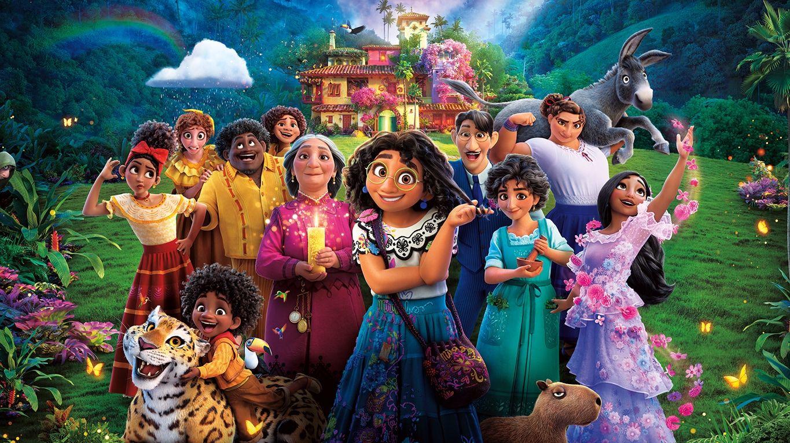
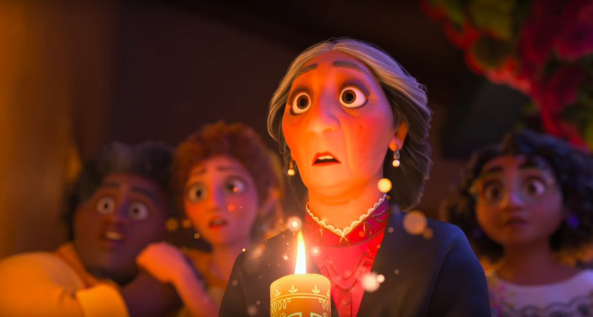

What's Encanto?

Encanto is a new production Disney based on Colombia culture; this is la latest Disney's movie number 60, where its tells about the Madrigal family and their magical house, Mirabel is the protagonist that unlike her family, she hasn't ever got a gift.
In a report of Good Morning America told about the reason of the why chose to Colombia in this movie. According to Byron Howard, director of the movie, Lin-Manuel Miranda was who persuaded him to make the next movie based in Latin America. Disney thought much which country could be and chose to Colombia, the land of coffee, Shakira and Gabriel Garcia Marques.


According to him, he told "It was home of magical realism, than we charm and really influenced the narration of the film, but also because Colombia is the crossroads of the music, culture and ethnic." He says.
The develop of this movie include travels to Choco, Barichara, Cartagena, Bogotá and other tourist places.
Know its triller
Our People
At the ethnic level, we can't comparative us with other popular movie of Pixar COCO than we can distinguish their accent and kind of skin, people's Colombian are very different from each other due to, in Colombia there are different thermal floors and the process of miscegenation since the conquest have made a culture diverse with different manifestations and customs.
You can find different kind of skin and other culture gesture depending in where you be. In Colombia never mind if you are white or black that isn't trouble, we are so friendly with our neighbors.Do you know women's Colombians are the most beautiful around the world?


Our Clothes


Colombia possess a lots of ethics people, is very easy suppose than there are different kind of typical clothes, for example we have to Mirabel, her clothes is a suit typical of Velez Santander, her espadrilles are confortable and lights.
The kids show us, the variety the typical clothes most representative of Colombians, a kid has a sombrero vueltiao and sombrero aguadeño, other kids has a poncho what is use to cold, we also have other character who has a guayabera what is a shirt with four pockets mede with cotton, linen or silk to be cool in hot weather.
Get to know more
Our traditions

Colombia has a lots of traditions, but the candle's day is the most representative into all these, that day is celebrate on 7th December each year. This day everyone get out of their house to light candles in the its or on the streets, most Colombians do this celebration with joy, the families eat buñelos and Natilla
Everyone celebrates the dogma of the Immaculate Conception of the Virgin Mary, our virgin, but there are a lot of most traditions, for example, there are the fair of flowers on 1st May in Medellin, black and white carnival between 2do and 6th day of January in Pasto, Carnival of Barranquilla which is celebrate 40 days before of Holy Week, processions of Holy Week in Popayan to recreate the Jesus's death, etc.


Insparing Places


In Encato we can watch a river the several color; it's awesome but the place if exist, the river is called Caño Cristales: the river of five colors, it found in Mecarena in the department of Meta and is consider as the most beautiful river of world. Its colors are caused for an aquatic plant.
The valley of Cocora is a emblematic place in where we can find too much wax palms, the national tree of Colombia,it was the directors decided than its was the place where lived of Madrigals.
The Colombian's Amazon is the protagonist of the movie, due to there are a lot of animals such as: Macaws, hummingbirds, Capybaras, snakes, butterflies, inclusive the Guacarí tree, the tree largest of Colombia.
1
2
3
Fun facts
Cartagena's balconies
The colonial house of Cartagena is a wonderful and awesome artwork, in where there are kind of flowers to decorate.

Arepas
Since long time Venezuela and Colombia fight about Arepa due to their are a typical food both countries, look this article. The arepa is made with ground maize, into it there are different ingredients as cheese, meet, chicken, eggs, etc.
The donkey
The donkey is a representative animal of Colombia, contrary to what we think, this animal is very intelligent and dociles. This is partner of Juan Valdez (Character representative of Colombia's coffee. In the municipality of San Antero in the department of Córdoba there is a festival donkey in Holy week to exalt them and dressing them with different fun suit.
Wayuu bag
Mirabel has a Wayuu bag which it made with cotton to hand for a Wayuu woman. These are too many popular in other countries as Korea.
Sanctuary of the Lajas
The sanctuary of the Lajas it's the most beautiful temple around the world according to "The Telegraph" British newspaper. Considered to "the miracle of God over abyss" and one of the seven wonderful of Colombia. This temple is in Apiales in the department of Nariño visited for more 750.000 parishioners every year.
The Dorado
Do you know where is recreated the Dorado legend? Yes, so it is. It's in Colombia in the Guatavita lagoon. This legend was born in century XVI, where the king Muisca covered himself with gold y then purified himself in the lagoon.